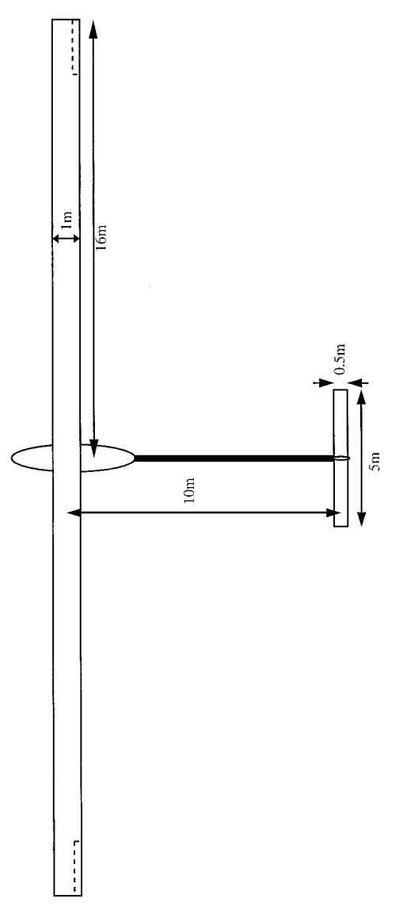
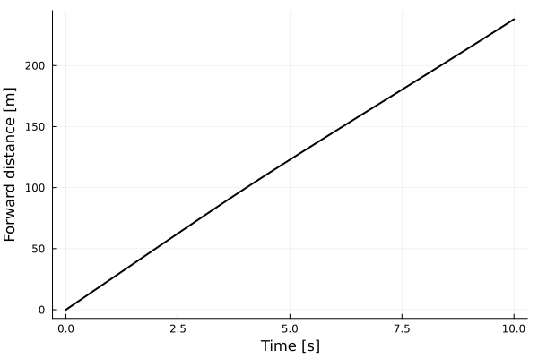
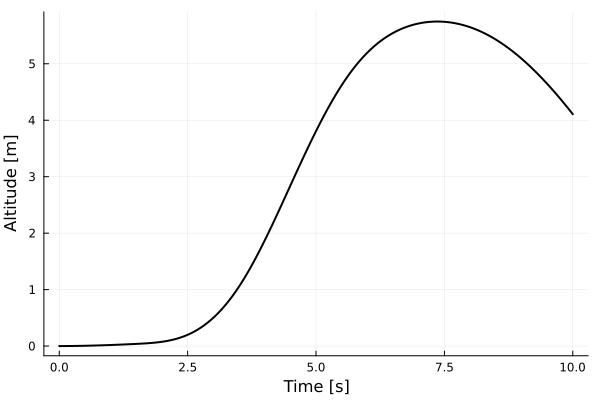
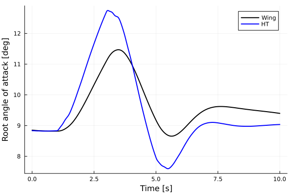
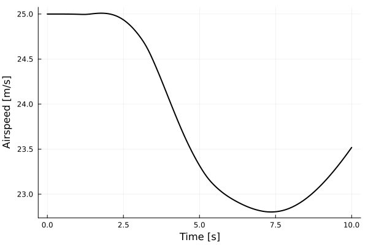
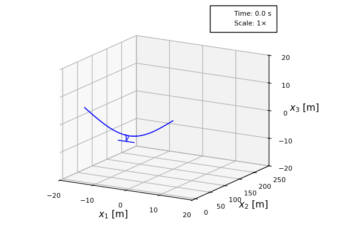

Pitch maneuver of a HALE aircraft
This example illustrates how to set up a dynamic analysis of an aircraft in free flight. For that we take a high-altitude long-endurance (HALE) aircraft model described by Patil, Hodges and Cesnik:
 HALE model geometry by Patil, Hodges and Cesnik
The code for this example is available here.
Problem setup
Let's begin by setting up the variables of our problem.
using AeroBeams
# Aerodynamic solver
aeroSolver = Inflow(6)
# Stiffness factor (for the structure)
λ = 1
# Altitude [m]
h = 20e3
# Airspeed [m/s]
U = 25
# Wing and stabilizers parasite drag
wingCd0 = stabsCd0 = 1e-2
# Option to include vertical stabilizer
includeVS = true
# Discretization
nElemWing = 20Trim problem
We have to first trim the aircraft at the specified flight condition. Our trim variables are the engine's thrust (modeled as a follower force at the root of the wing), and the elevator deflection. For the trim problem, we set a Newton-Raphson solver for the system of equations, with the adequate relaxation factor for trim problems (relaxFactor = 0.5), and an increased number of maximum iterations (maxiter = 50, the default is 20). We use the built-in function create_conventional_HALE to streamline the model creation process. A dedicated example explains the inner workings of that function.
# System solver
relaxFactor = 0.5
maxiter = 50
NR = create_NewtonRaphson(ρ=relaxFactor,maximumIterations=maxiter,relativeTolerance=1e-12)
# Model for trim problem
conventionalHALEtrim,_ = create_conventional_HALE(aeroSolver=aeroSolver,stiffnessFactor=λ,altitude=h,airspeed=U,nElemWing=nElemWing,wingCd0=wingCd0,stabsCd0=stabsCd0,δElevIsTrimVariable=true,thrustIsTrimVariable=true,includeVS=includeVS)
# Create and solve trim problem
trimProblem = create_TrimProblem(model=conventionalHALEtrim,systemSolver=NR)
solve!(trimProblem)
# Extract trim variables and outputs
trimAoA = (trimProblem.aeroVariablesOverσ[end][conventionalHALEtrim.beams[1].elementRange[end]].flowAnglesAndRates.αₑ + trimProblem.aeroVariablesOverσ[end][conventionalHALEtrim.beams[2].elementRange[1]].flowAnglesAndRates.αₑ)/2
trimThrust = trimProblem.x[end-1]*trimProblem.model.forceScaling
trimδ = trimProblem.x[end]
trimHTAoA = (trimProblem.aeroVariablesOverσ[end][35].flowAnglesAndRates.αₑ + trimProblem.aeroVariablesOverσ[end][36].flowAnglesAndRates.αₑ)/2Dynamic problem
The pitch maneuver investigated is defined by a checked elevator deflection, linearly ramped. The amplitude of the deflection, Δδ, is negative so as to command a climb. The time-dependent elevator profile, δ, is then passed as an argument to create the model for the dynamic problem.
# Set checked elevator deflection profile
Δδ = -10*π/180
tδinit = 1
tδramp = 2
tδpeak = tδinit+tδramp
tδfinal = tδpeak+tδramp
δ = t -> ifelse(
t <= tδinit,
trimδ,
ifelse(
t <= tδpeak,
trimδ + Δδ * ((t-tδinit) / (tδpeak-tδinit)),
ifelse(
t <= tδfinal,
trimδ + Δδ - Δδ * ((t-tδpeak) / (tδfinal-tδpeak)),
trimδ
)
)
)
# Model for dynamic problem
conventionalHALEdynamic,_ = create_conventional_HALE(aeroSolver=aeroSolver,stiffnessFactor=λ,altitude=h,airspeed=U,nElemWing=nElemWing,wingCd0=wingCd0,stabsCd0=stabsCd0,δElev=δ,thrust=trimThrust,includeVS=includeVS)
# Time variables
Δt = 1e-2
tf = 10
# Set NR system solver for dynamic problem
maxit = 100
NR = create_NewtonRaphson(maximumIterations=maxit)
# Create and solve dynamic problem
dynamicProblem = create_DynamicProblem(model=conventionalHALEdynamic,x0=trimProblem.x[1:end-2],finalTime=tf,Δt=Δt,skipInitialStatesUpdate=true,systemSolver=NR)
solve!(dynamicProblem)Post-processing
The first post-processing step is to unpack the desired outputs.
# Get wing root elements
lRootElem = div(nElemWing,2)
rRootElem = lRootElem+1
# Unpack numerical solution
t = dynamicProblem.timeVector
wingAoA = [(dynamicProblem.aeroVariablesOverTime[i][lRootElem].flowAnglesAndRates.αₑ+dynamicProblem.aeroVariablesOverTime[i][rRootElem].flowAnglesAndRates.αₑ)/2 for i in 1:length(t)]
htAoA = [(dynamicProblem.aeroVariablesOverTime[i][35].flowAnglesAndRates.αₑ+dynamicProblem.aeroVariablesOverTime[i][36].flowAnglesAndRates.αₑ)/2 for i in 1:length(t)]
Δu2 = [(conventionalHALEdynamic.u_A.(t[i])[2] + dynamicProblem.nodalStatesOverTime[i][lRootElem].u_n2[2]) for i in eachindex(t)] .- dynamicProblem.nodalStatesOverTime[1][lRootElem].u_n2[2]
Δu3 = [dynamicProblem.nodalStatesOverTime[i][lRootElem].u_n2[3] for i in 1:length(t)] .- dynamicProblem.nodalStatesOverTime[1][lRootElem].u_n2[3]
airspeed = [(dynamicProblem.aeroVariablesOverTime[i][lRootElem].flowVelocitiesAndRates.U∞+dynamicProblem.aeroVariablesOverTime[i][rRootElem].flowVelocitiesAndRates.U∞)/2 for i in 1:length(t)]We are now ready to visualize the results through the changes in forward distance and altitude, root angle of attack and airspeed.
using Plots
gr()
# Forward distance
plt1 = plot(xlabel="Time [s]", ylabel="Forward distance [m]")
plot!(t, Δu2, c=:black, lw=2, label=false)
# Altitude
plt2 = plot(xlabel="Time [s]", ylabel="Altitude [m]")
plot!(t, Δu3, c=:black, lw=2, label=false)
# Root AoA
plt3 = plot(xlabel="Time [s]", ylabel="Root angle of attack [deg]")
plot!(t, wingAoA*180/π, c=:black, lw=2, label="Wing")
plot!(t, htAoA*180/π, c=:blue, lw=2, label="HT")
# Airspeed
plt4 = plot(xlabel="Time [s]", ylabel="Airspeed [m/s]")
plot!(t, airspeed, c=:black, lw=2, label=false)   
Let's also visualize the complete motion of the aircraft (rigid + elastic) through the view of an inertial observer. For that, we use the plot_dynamic_deformation function with the appropriate arguments.
plot_dynamic_deformation(dynamicProblem,refBasis="I",view=(30,15),plotBCs=false,plotDistLoads=false,plotFrequency=10,plotLimits=[(-20,20),(-10,250),(-20,20)],save=true,savePath="/docs/build/literate/conventionalHALECheckedPitchManeuver_motion.gif")
This page was generated using Literate.jl.